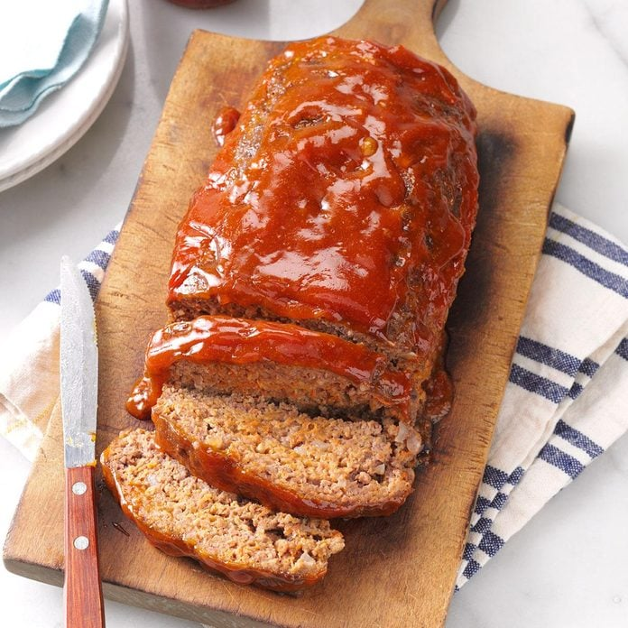

Tradtional Meat Loaf Recipe

Desctiption:
Topped with a sweet sauce, this traditional meat loaf recipe tastes so good that you might want to double it so everyone can have seconds. It also freezes well. —Gail Graham, Maple Ridge, British Columbia
Total Time:
Prep: 15 mins. Bake: 1 hour + standing
Makes: 6 servings
Ingredients:
- 3 slices of bread
- 1 large egg, lightly beaten
- 2/3 cup 2% milk
- 1 cup shredded cheddar cheese
- 1 medium onion, finely chopped
- 1/2 cup finely shredded carrot
- 1 teaspoon salt
- 1/4 teaspoon pepper
- 1-1/2 pounds ground beef
Glaze:
- 1/4 cup packed brown sugar
- 1/4 cup ketchup
- 1 tablespoon prepared mustard
Directions
- Preheat oven to 350°. Tear bread into 2-inch pieces; place in a blender. Cover and pulse to form coarse crumbs; transfer to a large bowl. Stir in egg, milk, cheese, onion, carrot, salt and pepper. Add beef; mix lightly but thoroughly. Transfer to a greased 9x5-in. loaf pan.
- In a small bowl, mix glaze ingredients; spread over loaf. Bake 60-75 minutes or until a thermometer reads 160°. Let stand 10 minutes before slicing.
Nutritional Facts:
1 slice: 394 calories, 21g fat (10g saturated fat), 128mg cholesterol, 843mg sodium, 23g carbohydrate (15g sugars, 1g fiber), 28g protein.
Back to home page
See Recipe